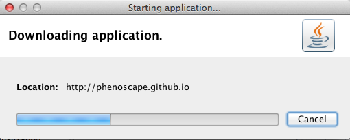
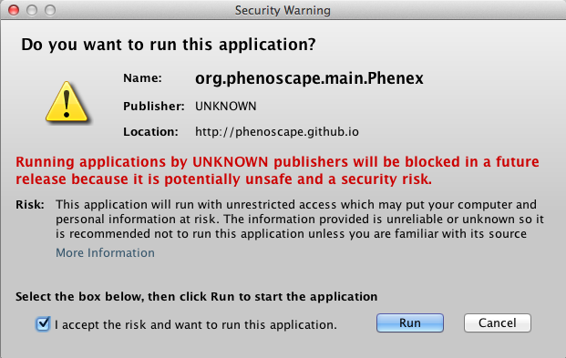
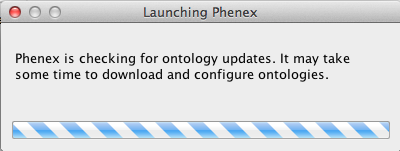

Phenex
Phenex is an application for annotating character matrix files with ontology terms using the Entity–Quality syntax for describing phenotypes.

Running Phenex
From this page you can launch Phenex as a Java web start application. Click the orange button to the left to start. After running Phenex for the first time, you should see a Phenex icon on your desktop and, on Windows, an entry in your Start menu. In the future you can launch Phenex using these shortcuts instead of coming to this website. When you launch Phenex, it will check for program updates and download new releases automatically.
Prerequisite
Phenex requires Java 7. Follow this link to install the latest version of Java.
Detailed instructions
Clicking the launch button will download a file named “phenex.jnlp”. If the Java web plugin is enabled in your browser, the JNLP file may run automatically. If not, locate the downloaded file and double-click it. Note for Mac users: you may be warned that “phenex.jnlp can't be opened because it is from an unidentified developer.” Right-click or control-click on the file and choose “Open” to bypass this warning. You should then see a notice that Java is starting up:
Next the application files will be downloaded:
Once the application is ready, you will be warned that the application will have access to your computer (as any native program would). Check the box and press “Run”.
When you see a message that Phenex is checking for ontology updates, the application has launched successfully. It may take a few minutes, particularly on the first run, to download ontology content.
